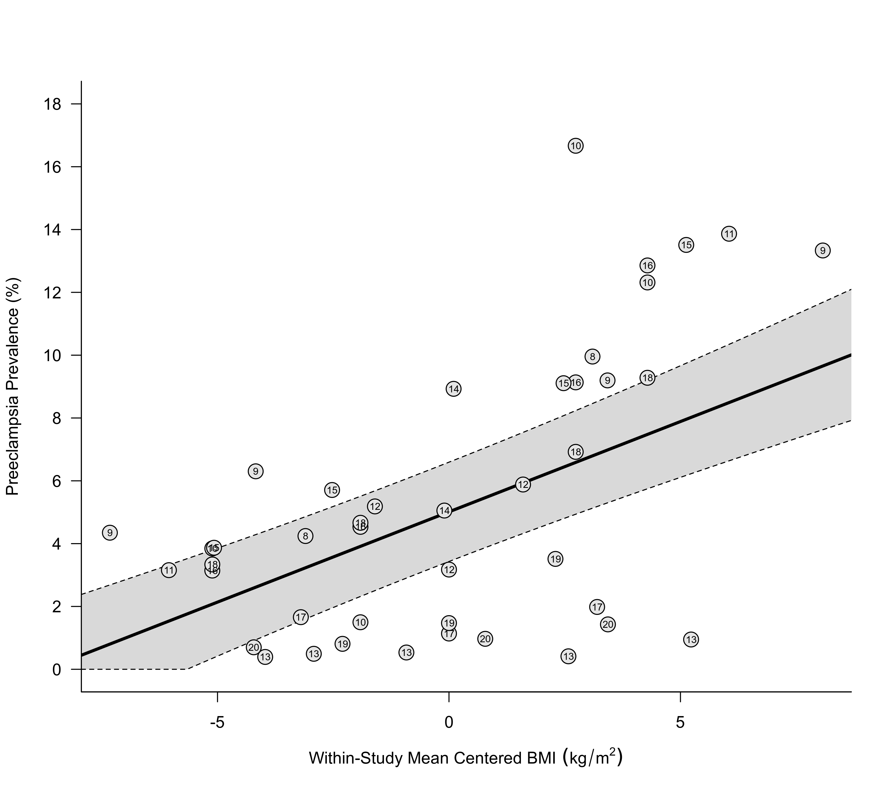

dat.obrien2003.RdResults from 13 studies on the relationship between maternal body mass index (BMI) and the risk of preeclampsia.
dat.obrien2003The data frame contains the following columns:
| study | numeric | study id |
| author | character | (first) author of the study |
| year | numeric | publication year |
| ref | numeric | reference number |
| ch | character | exclusion due to chronic hypertension (yes/no) |
| dm | character | exclusion due to diabetes mellitus (yes/no) |
| mg | character | exclusion due to multiple gestation (yes/no) |
| bmi.lb | numeric | lower bound of the BMI interval |
| bmi.ub | numeric | upper bound of the BMI interval |
| bmi | numeric | midpoint of the BMI interval |
| cases | numeric | number of preeclampsia cases in the BMI group |
| total | numeric | number of individuals in the BMI group |
The dataset includes the results from 13 studies examining the relationship between maternal body mass index (BMI) and the risk of preeclampsia. For each study, results are given in terms of the number of preeclampsia cases within two or more groups defined by the lower and upper BMI bounds as shown in the dataset (NA means that the interval is either open to the left or right). The bmi variable is the interval midpoint as defined by O'Brien et al. (2003).
O'Brien, T. E., Ray, J. G., & Chan, W.-S. (2003). Maternal body mass index and the risk of preeclampsia: A systematic overview. Epidemiology, 14(3), 368--374. https://doi.org/10.1097/00001648-200305000-00020
### copy data into 'dat' and examine data
dat <- dat.obrien2003
dat
#> study author year ref ch dm mg grp bmi.lb bmi.ub bmi cases total
#> 1 1 Edwards 1996 8 no no yes 1 19.8 26.0 22.90 28 660
#> 2 1 Edwards 1996 8 no no yes 2 29.0 NA 29.10 68 683
#> 3 2 Sibai 1997 9 yes yes yes 1 NA 19.8 19.70 18 414
#> 4 2 Sibai 1997 9 yes yes yes 2 19.8 25.9 22.85 142 2253
#> 5 2 Sibai 1997 9 yes yes yes 3 26.0 34.9 30.45 118 1283
#> 6 2 Sibai 1997 9 yes yes yes 4 35.0 NA 35.10 48 360
#> 7 3 Ogunyemi 1998 10 no no yes 1 NA 19.8 19.70 3 78
#> 8 3 Ogunyemi 1998 10 no no yes 2 19.8 26.0 22.90 5 334
#> 9 3 Ogunyemi 1998 10 no no yes 3 26.1 29.0 27.55 13 78
#> 10 3 Ogunyemi 1998 10 no no yes 4 29.0 NA 29.10 25 203
#> 11 4 Ros 1998 16 no no no 1 NA 19.8 19.70 11 350
#> 12 4 Ros 1998 16 no no no 2 19.8 26.0 22.90 78 1720
#> 13 4 Ros 1998 16 no no no 3 26.1 29.0 27.55 19 208
#> 14 4 Ros 1998 16 no no no 4 29.0 NA 29.10 18 140
#> 15 5 Bianco 1998 11 no no yes 1 19.0 27.0 23.00 357 11313
#> 16 5 Bianco 1998 11 no no yes 2 35.0 NA 35.10 85 613
#> 17 6 Knuist 1998 17 yes yes yes 1 NA 19.8 19.70 7 422
#> 18 6 Knuist 1998 17 yes yes yes 2 19.8 26.0 22.90 16 1406
#> 19 6 Knuist 1998 17 yes yes yes 3 26.0 NA 26.10 5 252
#> 20 7 Thadhani 1999 13 yes no no 1 NA 21.0 20.90 22 5605
#> 21 7 Thadhani 1999 13 yes no no 2 21.0 22.9 21.95 22 4463
#> 22 7 Thadhani 1999 13 yes no no 3 23.0 24.9 23.95 17 3182
#> 23 7 Thadhani 1999 13 yes no no 4 25.0 29.9 27.45 12 2906
#> 24 7 Thadhani 1999 13 yes no no 5 30.0 NA 30.10 10 1055
#> 25 8 Bowers 1999 12 yes yes yes 1 NA 26.0 25.90 7 135
#> 26 8 Bowers 1999 12 yes yes yes 2 26.0 29.0 27.50 2 63
#> 27 8 Bowers 1999 12 yes yes yes 3 29.0 NA 29.10 5 85
#> 28 9 Lee 2000 19 yes yes no 1 NA 19.8 19.70 80 9879
#> 29 9 Lee 2000 19 yes yes no 2 19.8 24.2 22.00 261 17750
#> 30 9 Lee 2000 19 yes yes no 3 24.2 NA 24.30 74 2106
#> 31 10 Conde-Agudelo 2000 18 no no no 1 NA 19.8 19.70 2901 86924
#> 32 10 Conde-Agudelo 2000 18 no no no 2 19.8 26.0 22.90 16885 362073
#> 33 10 Conde-Agudelo 2000 18 no no no 3 26.1 29.0 27.55 4264 61601
#> 34 10 Conde-Agudelo 2000 18 no no no 4 29.0 NA 29.10 4749 51172
#> 35 11 Steinfeld 2000 14 no no yes 1 NA 29.0 28.90 114 2256
#> 36 11 Steinfeld 2000 14 no no yes 2 29.0 NA 29.10 15 168
#> 37 12 Sebire 2001 20 no no yes 1 20.0 24.9 22.45 1238 176923
#> 38 12 Sebire 2001 20 no no yes 2 25.0 29.9 27.45 766 79014
#> 39 12 Sebire 2001 20 no no yes 3 30.0 NA 30.10 447 31276
#> 40 13 Baeten 2001 15 no no yes 1 NA 20.0 19.90 731 18893
#> 41 13 Baeten 2001 15 no no yes 2 20.0 24.9 22.45 2866 50212
#> 42 13 Baeten 2001 15 no no yes 3 25.0 29.9 27.45 1594 17501
#> 43 13 Baeten 2001 15 no no yes 4 30.0 NA 30.10 1321 9778
# \dontrun{
### load metafor package
require(metafor)
### restructure the data into a wide format
dat2 <- to.wide(dat, study="study", grp="grp", ref=1, grpvars=c("bmi","cases","total"),
addid=FALSE, adddesign=FALSE, postfix=c(1,2))
dat2[1:10, -c(2:3)]
#> study ref ch dm mg grp1 bmi.lb bmi.ub bmi1 cases1 total1 grp2 bmi2 cases2 total2 comp
#> 1 1 8 no no yes 2 29.0 NA 29.10 68 683 1 22.9 28 660 2-1
#> 2 2 9 yes yes yes 2 19.8 25.9 22.85 142 2253 1 19.7 18 414 2-1
#> 3 2 9 yes yes yes 3 26.0 34.9 30.45 118 1283 1 19.7 18 414 3-1
#> 4 2 9 yes yes yes 4 35.0 NA 35.10 48 360 1 19.7 18 414 4-1
#> 5 3 10 no no yes 2 19.8 26.0 22.90 5 334 1 19.7 3 78 2-1
#> 6 3 10 no no yes 3 26.1 29.0 27.55 13 78 1 19.7 3 78 3-1
#> 7 3 10 no no yes 4 29.0 NA 29.10 25 203 1 19.7 3 78 4-1
#> 8 4 16 no no no 2 19.8 26.0 22.90 78 1720 1 19.7 11 350 2-1
#> 9 4 16 no no no 3 26.1 29.0 27.55 19 208 1 19.7 11 350 3-1
#> 10 4 16 no no no 4 29.0 NA 29.10 18 140 1 19.7 11 350 4-1
### calculate log risk ratios and corresponding sampling variances
dat2 <- escalc(measure="RR", ai=cases1, n1i=total1, ci=cases2, n2i=total2, data=dat2)
dat2[1:10, -c(2:7)]
#> study grp1 bmi.lb bmi.ub bmi1 cases1 total1 grp2 bmi2 cases2 total2 comp yi vi
#> 1 1 2 29.0 NA 29.10 68 683 1 22.9 28 660 2-1 0.8530 0.0474
#> 2 2 2 19.8 25.9 22.85 142 2253 1 19.7 18 414 2-1 0.3713 0.0597
#> 3 2 3 26.0 34.9 30.45 118 1283 1 19.7 18 414 3-1 0.7492 0.0608
#> 4 2 4 35.0 NA 35.10 48 360 1 19.7 18 414 4-1 1.1206 0.0712
#> 5 3 2 19.8 26.0 22.90 5 334 1 19.7 3 78 2-1 -0.9436 0.5175
#> 6 3 3 26.1 29.0 27.55 13 78 1 19.7 3 78 3-1 1.4663 0.3846
#> 7 3 4 29.0 NA 29.10 25 203 1 19.7 3 78 4-1 1.1638 0.3556
#> 8 4 2 19.8 26.0 22.90 78 1720 1 19.7 11 350 2-1 0.3667 0.1003
#> 9 4 3 26.1 29.0 27.55 19 208 1 19.7 11 350 3-1 1.0669 0.1359
#> 10 4 4 29.0 NA 29.10 18 140 1 19.7 11 350 4-1 1.4088 0.1365
### forest plot of the risk ratios
dd <- c(0,diff(dat2$study))
dd[dd > 0] <- 1
rows <- (1:nrow(dat2)) + cumsum(dd)
rows <- 1 + max(rows) - rows
slabs <- mapply(function(x,y,z) as.expression(bquote(.(x)^.(y)~.(z))),
dat2$author, dat2$ref, dat2$year)
with(dat2, forest(yi, vi, header=TRUE, slab=slabs, xlim=c(-7,5.5), fonts="mono", cex=0.8,
psize=1, pch=19, efac=0, rows=rows, ylim=c(0,max(rows)+3), yaxs="i",
atransf=exp, at=log(c(.05,0.1,0.2,0.5,1,2,5,10,20)), ilab=comp, ilab.xpos=-4, ilab.pos=4))
text(-4.4, max(rows)+2, "Comparison", font=2, cex=0.8, pos=4)
### within-study mean center the BMI variable
dat$bmicent <- dat$bmi - ave(dat$bmi, dat$study)
### compute the proportion of preeclampsia cases and corresponding sampling variances
dat <- escalc(measure="PR", xi=cases, ni=total, data=dat)
### convert the proportions to percentages (and convert the variances accordingly)
dat$yi <- dat$yi*100
dat$vi <- dat$vi*100^2
dat[1:10, -c(2:3)]
#> study ref ch dm mg grp bmi.lb bmi.ub bmi cases total bmicent yi vi
#> 1 1 8 no no yes 1 19.8 26.0 22.90 28 660 -3.1000 4.2424 0.6155
#> 2 1 8 no no yes 2 29.0 NA 29.10 68 683 3.1000 9.9561 1.3126
#> 3 2 9 yes yes yes 1 NA 19.8 19.70 18 414 -7.3250 4.3478 1.0045
#> 4 2 9 yes yes yes 2 19.8 25.9 22.85 142 2253 -4.1750 6.3027 0.2621
#> 5 2 9 yes yes yes 3 26.0 34.9 30.45 118 1283 3.4250 9.1972 0.6509
#> 6 2 9 yes yes yes 4 35.0 NA 35.10 48 360 8.0750 13.3333 3.2099
#> 7 3 10 no no yes 1 NA 19.8 19.70 3 78 -5.1125 3.8462 4.7413
#> 8 3 10 no no yes 2 19.8 26.0 22.90 5 334 -1.9125 1.4970 0.4415
#> 9 3 10 no no yes 3 26.1 29.0 27.55 13 78 2.7375 16.6667 17.8063
#> 10 3 10 no no yes 4 29.0 NA 29.10 25 203 4.2875 12.3153 5.3195
### fit multilevel meta-regression model to examine the relationship between the
### (centered) BMI variable and the risk of preeclampsia
res <- rma.mv(yi, vi, mods = ~ bmicent, random = ~ 1 | study/grp, data=dat)
res
#>
#> Multivariate Meta-Analysis Model (k = 43; method: REML)
#>
#> Variance Components:
#>
#> estim sqrt nlvls fixed factor
#> sigma^2.1 7.2715 2.6966 13 no study
#> sigma^2.2 2.5192 1.5872 43 no study/grp
#>
#> Test for Residual Heterogeneity:
#> QE(df = 41) = 20152.6718, p-val < .0001
#>
#> Test of Moderators (coefficient 2):
#> QM(df = 1) = 57.0360, p-val < .0001
#>
#> Model Results:
#>
#> estimate se zval pval ci.lb ci.ub
#> intrcpt 5.0125 0.8068 6.2129 <.0001 3.4312 6.5938 ***
#> bmicent 0.5749 0.0761 7.5522 <.0001 0.4257 0.7241 ***
#>
#> ---
#> Signif. codes: 0 ‘***’ 0.001 ‘**’ 0.01 ‘*’ 0.05 ‘.’ 0.1 ‘ ’ 1
#>
### draw scatterplot with regression line
res$slab <- dat$ref
regplot(res, xlab=expression("Within-Study Mean Centered BMI"~(kg/m^2)),
ylab="Preeclampsia Prevalence (%)", las=1, bty="l",
at=seq(0,18,by=2), olim=c(0,100), psize=2, bg="gray90",
label=TRUE, offset=0, labsize=0.6)

### fit model using a random slope for bmicent
res <- rma.mv(yi, vi, mods = ~ bmicent, random = ~ bmicent | study, struct="GEN", data=dat)
res
#>
#> Multivariate Meta-Analysis Model (k = 43; method: REML)
#>
#> Variance Components:
#>
#> outer factor: study (nlvls = 13)
#> inner term: ~bmicent (nlvls = 33)
#>
#> estim sqrt fixed rho: intr bmcn
#> intrcpt 8.2128 2.8658 no - 0.8723
#> bmicent 0.0903 0.3006 no no -
#>
#> Test for Residual Heterogeneity:
#> QE(df = 41) = 20152.6718, p-val < .0001
#>
#> Test of Moderators (coefficient 2):
#> QM(df = 1) = 28.6345, p-val < .0001
#>
#> Model Results:
#>
#> estimate se zval pval ci.lb ci.ub
#> intrcpt 4.7340 0.8085 5.8553 <.0001 3.1494 6.3186 ***
#> bmicent 0.4887 0.0913 5.3511 <.0001 0.3097 0.6677 ***
#>
#> ---
#> Signif. codes: 0 ‘***’ 0.001 ‘**’ 0.01 ‘*’ 0.05 ‘.’ 0.1 ‘ ’ 1
#>
# }